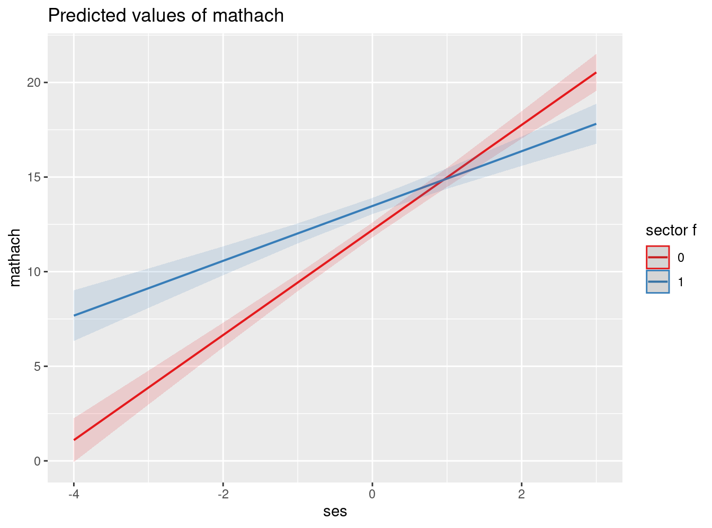
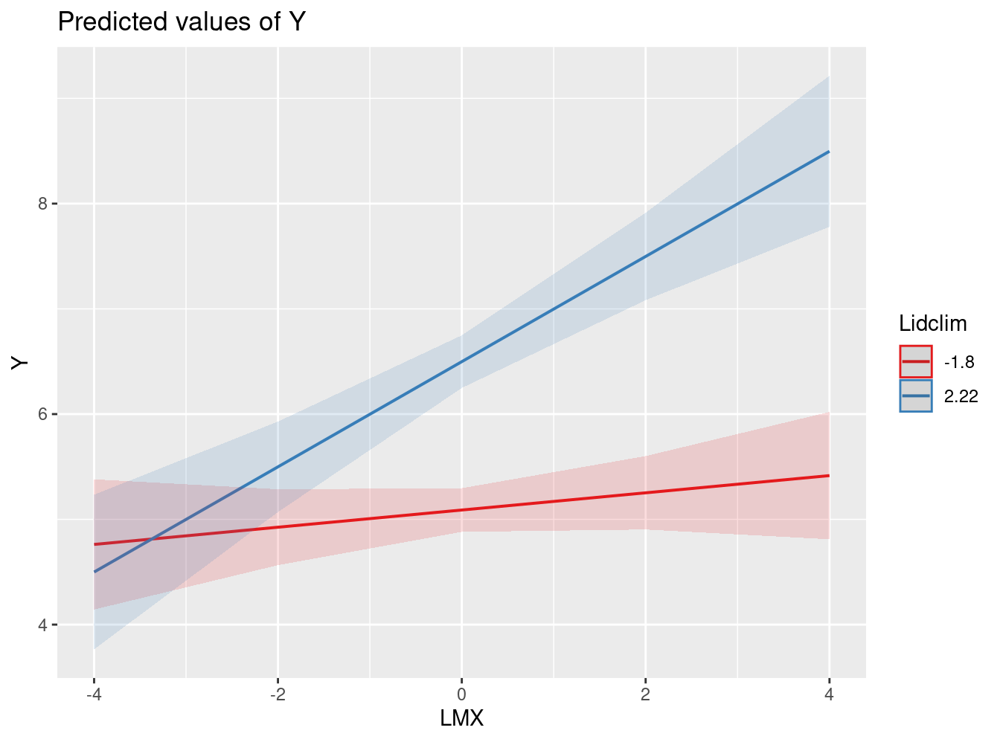

pacman::p_load(lme4,haven,foreign, stargazer, texreg, lattice, sjPlot, dplyr, ggplot2, ggeffects) # paquetes a cargarInteracción entre niveles
Correspondiente a la sesión del viernes, 13 de octubre de 2023
1 Cargar/instalar librerías
2 Ejemplo 1, datos HSB
2.1 Datos
mlm = read_dta("http://www.stata-press.com/data/mlmus3/hsb.dta")
dim(mlm)
names(mlm)
attach(mlm)Tabla estadisticos descriptivos
stargazer(as.data.frame(mlm),title="Estadísticos descriptivos", type = "text")
Estadísticos descriptivos
===================================================
Statistic N Mean St. Dev. Min Max
---------------------------------------------------
minority 7,185 0.275 0.446 0 1
female 7,185 0.528 0.499 0 1
ses 7,185 0.0001 0.779 -3.758 2.692
mathach 7,185 12.748 6.878 -2.832 24.993
size 7,185 1,056.862 604.172 100 2,713
sector 7,185 0.493 0.500 0 1
pracad 7,185 0.534 0.251 0.000 1.000
disclim 7,185 -0.132 0.944 -2.416 2.756
himinty 7,185 0.280 0.449 0 1
schoolid 7,185 5,277.898 2,499.578 1,224 9,586
mean 7,185 12.748 3.006 4.240 19.719
sd 7,185 6.198 0.864 3.541 8.481
sdalt 7,185 6.256 0.000 6.256 6.256
junk 7,185 47.316 48.898 0.00002 239.289
sdalt2 7,185 48.394 0.000 48.394 48.394
num 7,185 48.016 10.822 14 67
se 7,185 0.919 0.202 0.506 1.824
sealt 7,185 0.925 0.129 0.764 1.672
sealt2 7,185 1.028 0.144 0.850 1.859
t2 7,185 14.656 26.416 0.001 195.811
t2alt 7,185 8.538 11.063 0.001 52.825
pickone 7,185 0.022 0.148 0 1
mmses 7,185 0.0001 0.414 -1.194 0.825
mnses 7,185 0.0001 0.414 -1.194 0.825
xb 7,185 12.685 2.425 5.684 17.522
resid 7,185 0.062 6.459 -19.489 16.445
---------------------------------------------------2.2 Modelos
- Revisar estructura variable para la interacción
str(mlm$sector)num [1:7185] 0 0 0 0 0 0 0 0 0 0 … - attr(*, “format.stata”)= chr “%8.0g”
table(mlm$sector)0 1 3642 3543
mlm$sector_f=as.factor(mlm$sector) # Cambiar a factor- Pendiente fija & aleatoria
reg_mlm3a = lmer(mathach ~ 1 + ses + sector_f + mnses + (1 | schoolid),data=mlm)
# Con pendiente aleatoria
reg_mlm3b = lmer(mathach ~ 1 + ses + sector_f + mnses + (1 + ses | schoolid),data=mlm)- Devianza (ajuste comparativo pendiente fija vs aleatoria)
anova(reg_mlm3b,reg_mlm3a)Data: mlm
Models:
reg_mlm3a: mathach ~ 1 + ses + sector_f + mnses + (1 | schoolid)
reg_mlm3b: mathach ~ 1 + ses + sector_f + mnses + (1 + ses | schoolid)
npar AIC BIC logLik deviance Chisq Df Pr(>Chisq)
reg_mlm3a 6 46560 46602 -23274 46548
reg_mlm3b 8 46558 46613 -23271 46542 6.0463 2 0.04865 *
---
Signif. codes: 0 '***' 0.001 '**' 0.01 '*' 0.05 '.' 0.1 ' ' 1- Estimar modelo con interacción
reg_mlm3c = lmer(mathach ~ 1 + ses + sector_f + ses*sector_f + mnses + (1 + ses | schoolid), data=mlm)
screenreg(c(reg_mlm3a,reg_mlm3b, reg_mlm3c))
==========================================================================
Model 1 Model 2 Model 3
--------------------------------------------------------------------------
(Intercept) 12.13 *** 12.04 *** 12.20 ***
(0.20) (0.20) (0.20)
ses 2.19 *** 2.20 *** 2.78 ***
(0.11) (0.12) (0.14)
sector_f1 1.22 *** 1.41 *** 1.27 ***
(0.31) (0.31) (0.30)
mnses 3.15 *** 3.16 *** 3.13 ***
(0.38) (0.39) (0.38)
ses:sector_f1 -1.33 ***
(0.21)
--------------------------------------------------------------------------
AIC 46565.83 46563.47 46532.06
BIC 46607.11 46618.51 46593.98
Log Likelihood -23276.92 -23273.74 -23257.03
Num. obs. 7185 7185 7185
Num. groups: schoolid 160 160 160
Var: schoolid (Intercept) 2.37 2.43 2.34
Var: Residual 37.02 36.78 36.79
Var: schoolid ses 0.47 0.07
Cov: schoolid (Intercept) ses 0.29 0.18
==========================================================================
*** p < 0.001; ** p < 0.01; * p < 0.052.3 Plot
plot_model(reg_mlm3c, type = "int")
3 Ejemplo Aguinis
Link a paper aquí
Planteamiento general:
” Overall, Chen et al.’s theoretical model predicted that employees who report higher LMX (i.e., a better relationship with their leader) will feel more empowered (i.e., they have the autonomy and capability to perform meaning- ful work that can affect their organization). In addition, Chen et al.’s model included the hypothesis that the team-level variable leadership climate (i.e., ambient leadership behaviors directed at the team as a whole) would also affect individual-level empowerment positively. Moreover, Chen et al. hypothesized that the relationship between LMX and empowerment would be moderated by leadership climate such that the relationship would be stronger for teams with a better leadership climate.” (p.1492)
- Preguntas e hipótesis:
Lower-level direct effects. Does a lower-level predictor X (i.e., Level 1 or L1 predictor) have an effect on a lower-level outcome variable Y (i.e., L1 outcome)? Specifically regarding our illus- tration, there is an interest in testing whether LMX, as perceived by subordinates, predicts individual empowerment. Note that LMX scores are collected for each individual worker (i.e., there is no aggregation of such scores for the purpose of testing the presence of a lower-level direct effect).
Cross-level direct effects. Does a higher-level predictor W (i.e., Level 2 or L2 predictor) have an effect on an L1 outcome variable Y? Specifically, we would like to assess whether L2 variable leadership climate predicts L1 outcome individual empowerment.
Cross-level interaction effects. Does the nature or strength of the relationship between two lower-level variables (e.g., L1 predictor X and L1 outcome Y) change as a function of a higher- level variable W? Referring back to our substantive illustration, we are interested in testing the hypothesis that the relationship between LMX and individual empowerment may vary as a function of (i.e., is moderated by) the degree of leadership climate such that the relationship will be stronger for teams with more positive leadership climate and weaker for teams with less positive leadership climate.
3.1 Datos
exdata=read.csv("https://multinivel.netlify.com/practicas/data/aguinis_JOM.csv", header = TRUE, sep = ",")
stargazer(exdata, type = "text")
============================================
Statistic N Mean St. Dev. Min Max
--------------------------------------------
l1id 630 3.500 1.709 1 6
l2id 630 53.000 30.334 1 105
X 630 4.800 1.500 0.221 8.731
Xbarj 630 4.800 0.793 3.319 6.907
Wj 630 4.770 0.700 2.966 6.987
cat 630 0.505 0.500 0 1
Y 630 5.720 0.900 2.739 8.381
Xc 630 0.000 1.273 -3.904 3.865
XcWj 630 -0.000 6.196 -22.683 18.487
Wjc 630 -0.000 0.700 -1.804 2.217
--------------------------------------------- Rename variables para que sean más coherentes con el ejemplo
exdata <- exdata %>% rename(LMX=Xc,Lidclim=Wjc)Variables relevantes
- l2id: id de nivel 2, equipos de trabajo
- LMX: quality of leader–member exchange
- Lidclim: clima de liderazgo en el equipo
- Y: variable dependiente, empoderamiento individual
3.2 Modelos
- Modelo Nulo e ICC
lmm.fit1=lmer(Y ~ 1 + (1|l2id), data=exdata,REML=F)
summary(lmm.fit1)Linear mixed model fit by maximum likelihood ['lmerMod']
Formula: Y ~ 1 + (1 | l2id)
Data: exdata
AIC BIC logLik deviance df.resid
1643.0 1656.4 -818.5 1637.0 627
Scaled residuals:
Min 1Q Median 3Q Max
-2.96708 -0.61992 -0.00518 0.60150 2.88977
Random effects:
Groups Name Variance Std.Dev.
l2id (Intercept) 0.09494 0.3081
Residual 0.71378 0.8449
Number of obs: 630, groups: l2id, 105
Fixed effects:
Estimate Std. Error t value
(Intercept) 5.72000 0.04513 126.7reghelper::ICC(lmm.fit1)[1] 0.1173919- Modelo con predictores fijos
lmm.fit2=lmer(Y ~1 + LMX + Lidclim +(1|l2id),data=exdata,REML=F)
screenreg(lmm.fit2)
==================================
Model 1
----------------------------------
(Intercept) 5.72 ***
(0.04)
LMX 0.28 ***
(0.02)
Lidclim 0.35 ***
(0.05)
----------------------------------
AIC 1487.64
BIC 1509.87
Log Likelihood -738.82
Num. obs. 630
Num. groups: l2id 105
Var: l2id (Intercept) 0.06
Var: Residual 0.56
==================================
*** p < 0.001; ** p < 0.01; * p < 0.05- Pendiente aleatoria
lmm.fit3=lmer(Y ~1 + LMX + Lidclim +(1 + LMX|l2id), data=exdata,REML=F)
summary(lmm.fit3)Linear mixed model fit by maximum likelihood ['lmerMod']
Formula: Y ~ 1 + LMX + Lidclim + (1 + LMX | l2id)
Data: exdata
AIC BIC logLik deviance df.resid
1483.5 1514.6 -734.7 1469.5 623
Scaled residuals:
Min 1Q Median 3Q Max
-3.0693 -0.5814 -0.0309 0.5965 3.5938
Random effects:
Groups Name Variance Std.Dev. Corr
l2id (Intercept) 0.06802 0.2608
LMX 0.02529 0.1590 -0.09
Residual 0.51438 0.7172
Number of obs: 630, groups: l2id, 105
Fixed effects:
Estimate Std. Error t value
(Intercept) 5.72000 0.03827 149.478
LMX 0.26958 0.02829 9.530
Lidclim 0.35570 0.05468 6.505
Correlation of Fixed Effects:
(Intr) LMX
LMX -0.034
Lidclim 0.000 -0.001Deviance
anova(lmm.fit2,lmm.fit3)Data: exdata
Models:
lmm.fit2: Y ~ 1 + LMX + Lidclim + (1 | l2id)
lmm.fit3: Y ~ 1 + LMX + Lidclim + (1 + LMX | l2id)
npar AIC BIC logLik deviance Chisq Df Pr(>Chisq)
lmm.fit2 5 1487.6 1509.9 -738.82 1477.6
lmm.fit3 7 1483.5 1514.6 -734.75 1469.5 8.1422 2 0.01706 *
---
Signif. codes: 0 '***' 0.001 '**' 0.01 '*' 0.05 '.' 0.1 ' ' 1- Modelo con interacción entre niveles
lmm.fit4=lmer(Y ~1 + LMX*Lidclim + (1 + LMX|l2id), data=exdata, REML=F)
screenreg(lmm.fit4)
======================================
Model 1
--------------------------------------
(Intercept) 5.72 ***
(0.04)
LMX 0.27 ***
(0.03)
Lidclim 0.35 ***
(0.05)
LMX:Lidclim 0.10 **
(0.04)
--------------------------------------
AIC 1478.19
BIC 1513.76
Log Likelihood -731.10
Num. obs. 630
Num. groups: l2id 105
Var: l2id (Intercept) 0.07
Var: l2id LMX 0.02
Cov: l2id (Intercept) LMX -0.00
Var: Residual 0.52
======================================
*** p < 0.001; ** p < 0.01; * p < 0.053.3 Reporte final
- Tabla
screenreg(list(lmm.fit1, lmm.fit2, lmm.fit3, lmm.fit4))
=============================================================================
Model 1 Model 2 Model 3 Model 4
-----------------------------------------------------------------------------
(Intercept) 5.72 *** 5.72 *** 5.72 *** 5.72 ***
(0.05) (0.04) (0.04) (0.04)
LMX 0.28 *** 0.27 *** 0.27 ***
(0.02) (0.03) (0.03)
Lidclim 0.35 *** 0.36 *** 0.35 ***
(0.05) (0.05) (0.05)
LMX:Lidclim 0.10 **
(0.04)
-----------------------------------------------------------------------------
AIC 1643.04 1487.64 1483.50 1478.19
BIC 1656.38 1509.87 1514.62 1513.76
Log Likelihood -818.52 -738.82 -734.75 -731.10
Num. obs. 630 630 630 630
Num. groups: l2id 105 105 105 105
Var: l2id (Intercept) 0.09 0.06 0.07 0.07
Var: Residual 0.71 0.56 0.51 0.52
Var: l2id LMX 0.03 0.02
Cov: l2id (Intercept) LMX -0.00 -0.00
=============================================================================
*** p < 0.001; ** p < 0.01; * p < 0.05En html
htmlreg(list(lmm.fit1, lmm.fit2, lmm.fit3, lmm.fit4),
custom.model.names = c("Nulo","Pendiente <br> fija","Pendiente <br> Aleatoria", "Interacción"),
custom.coef.names = c("Intercepto", "LMX $(\\gamma_{10})$" ,"Clima liderazgo $(\\gamma_{01})$", "LMX*Clima $(\\gamma_{11})$"),
custom.gof.names=c(NA,NA,NA,NA,NA,
"Var: l2id ($\\tau_{00}$)",
"Var: Residual ($\\sigma^2$)",
"Var: l2id LMX ($\\tau_{11}$)",
"Cov: l2id (Intercept) LMX ($\\tau_{01}$)"),
custom.note = "%stars. Errores estándar en paréntesis",
caption="Replicacion Tabla Aguinis",
caption.above=TRUE,
digits=3,
doctype = FALSE)| Nulo |
Pendiente fija |
Pendiente Aleatoria |
Interacción | |
|---|---|---|---|---|
| Intercepto | 5.720*** | 5.720*** | 5.720*** | 5.720*** |
| (0.045) | (0.038) | (0.038) | (0.038) | |
| LMX \((\gamma_{10})\) | 0.279*** | 0.270*** | 0.269*** | |
| (0.023) | (0.028) | (0.027) | ||
| Clima liderazgo \((\gamma_{01})\) | 0.351*** | 0.356*** | 0.351*** | |
| (0.055) | (0.055) | (0.055) | ||
| LMX*Clima \((\gamma_{11})\) | 0.104** | |||
| (0.037) | ||||
| AIC | 1643.040 | 1487.641 | 1483.499 | 1478.192 |
| BIC | 1656.377 | 1509.870 | 1514.619 | 1513.758 |
| Log Likelihood | -818.520 | -738.821 | -734.749 | -731.096 |
| Num. obs. | 630 | 630 | 630 | 630 |
| Num. groups: l2id | 105 | 105 | 105 | 105 |
| Var: l2id (\(\tau_{00}\)) | 0.095 | 0.060 | 0.068 | 0.068 |
| Var: Residual (\(\sigma^2\)) | 0.714 | 0.563 | 0.514 | 0.516 |
| Var: l2id LMX (\(\tau_{11}\)) | 0.025 | 0.019 | ||
| Cov: l2id (Intercept) LMX (\(\tau_{01}\)) | -0.004 | -0.004 | ||
| ***p < 0.001; **p < 0.01; *p < 0.05. Errores estándar en paréntesis | ||||
- Interaction Plot
plot_model(lmm.fit4, type = "int")